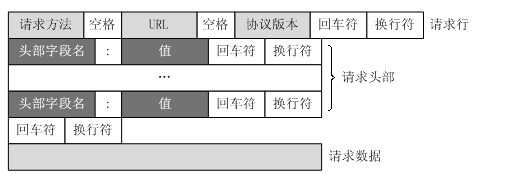
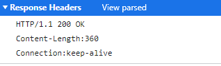
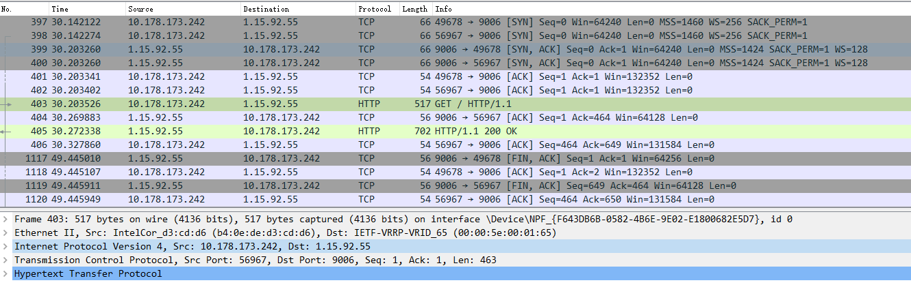
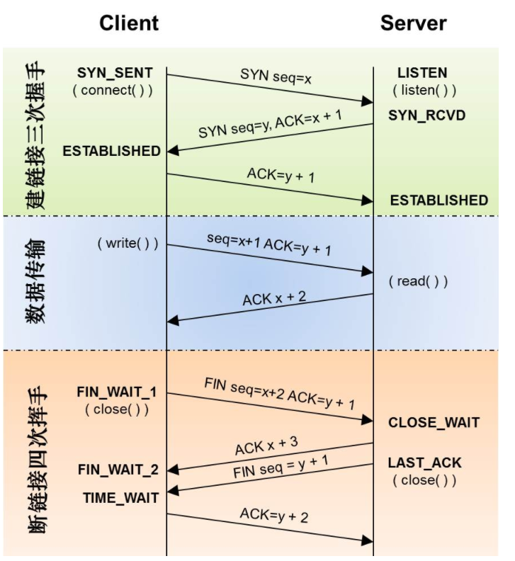
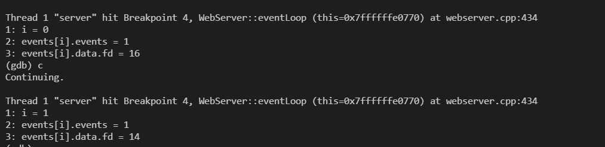
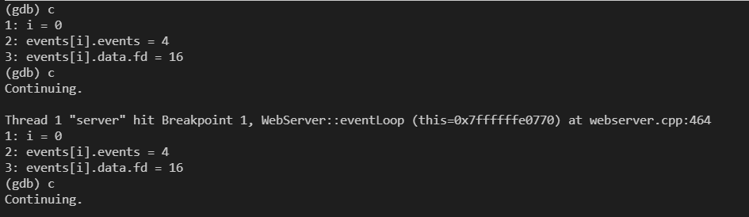
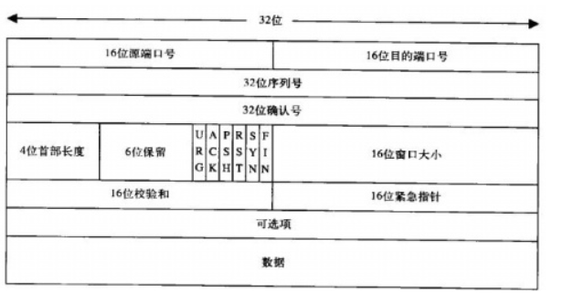
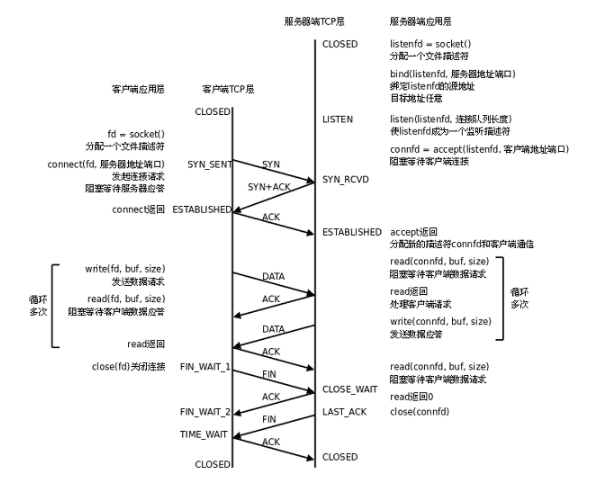

http协议也许是使用最广泛的应用层协议
HTTP报文
请求报文
一个HTTP请求报文由请求行（request line）、请求头部（header）、空行和请求数据4个部分组成

get请求举例
GET /favicon.ico HTTP/1.1\r\nHost: 172.20.109.213:9006\r\nConnection: keep-alive\r\nPragma: no-cache\r\nCache-Control: no-cache\r\nUser-Agent: Mozilla/5.0 (Windows NT 10.0; Win64; x64) AppleWebKit/537.36 (KHTML, like Gecko) Chrome/93.0.4577.82 Safari/537.36\r\nAccept: image/avif,image/webp,image/apng,image/svg+xml,image/*,*/*;q=0.8\r\nReferer: http://172.20.109.213:9006/5\r\nAccept-Encoding: gzip, deflate\r\nAccept-Language: en,zh-CN;q=0.9,zh;q=0.8,bs;q=0.7,zh-TW;q=0.6\r\n\r\npost请求举例
"POST /3CGISQL.cgi HTTP/1.1\r\nHost: 172.20.109.213:9006\r\nConnection: keep-alive\r\nContent-Length: 21\r\nCache-Control: max-age=0\r\nUpgrade-Insecure-Requests: 1\r\nOrigin: http://172.20.109.213:9006\r\nContent-Type: application/x-www-form-urlencoded\r\nUser-Agent: Mozilla/5.0 (Windows NT 10.0; Win64; x64) AppleWebKit/537.36 (KHTML, like Gecko) Chrome/93.0.4577.82 Safari/537.36\r\nAccept: text/html,application/xhtml+xml,application/xml;q=0.9,image/avif,image/webp,image/apng,*/*;q=0.8,application/signed-exchange;v=b3;q=0.9\r\nReferer: http://172.20.109.213:9006/0\r\nAccept-Encoding: gzip, deflate\r\nAccept-Language: en,zh-CN;q=0.6\r\n\r\nuser=test&password=go"请求数据和请求头部的区分在于
\r\n\r\n第一个
\r\n前面的是请求行中间的是请求头部, 请求头部每一行都是
字段名:值的形式POST方法将请求参数封装在HTTP请求数据中，以名称/值的形式出现，可以传输大量数据，这样POST方式对传送的数据大小没有限制，而且也不会显示在URL中。
请求数据不在GET方法中使用，而是在POST方法中使用。Get方法的请求body是空的, POST方法适用于需要客户填写表单的场合。与请求数据相关的最常使用的请求头是Content-Type和Content-Length。
响应报文
HTTP响应也由三个部分组成，分别是：状态行、消息报头、响应正文。
状态行格式如下：
HTTP-Version Status-Code Reason-Phrase CRLF其中，HTTP-Version表示服务器HTTP协议的版本；Status-Code表示服务器发回的响应状态代码；Reason-Phrase表示状态代码的文本描述。状态代码由三位数字组成，第一个数字定义了响应的类别，且有五种可能取值。
- 1xx：指示信息–表示请求已接收，继续处理。
- 2xx：成功–表示请求已被成功接收、理解、接受。
- 3xx：重定向–要完成请求必须进行更进一步的操作。
- 4xx：客户端错误–请求有语法错误或请求无法实现。
- 5xx：服务器端错误–服务器未能实现合法的请求。
常见状态代码、状态描述的说明如下。
- 200 OK：客户端请求成功。
- 400 Bad Request：客户端请求有语法错误，不能被服务器所理解。
- 401 Unauthorized：请求未经授权，这个状态代码必须和WWW-Authenticate报头域一起使用。
- 403 Forbidden：服务器收到请求，但是拒绝提供服务。
- 404 Not Found：请求资源不存在，举个例子：输入了错误的URL。
- 500 Internal Server Error：服务器发生不可预期的错误。
- 503 Server Unavailable：服务器当前不能处理客户端的请求，一段时间后可能恢复正常

深入理解
keep alive
TCP的KeepAlive机制意图在于保活、心跳，检测连接错误(默认两小时)。一方会不定期发送心跳包给另一方，当一方断掉的时候，没有断掉的定时发送几次心跳包，如果间隔发送几次，对方都返回的是RST，而不是ACK，那么就释放当前链接。
HTTP的keep-alive意图在于短时间内连接复用，希望可以短时间内在同一个连接上进行多次请求/响应。普通的http连接是客户端连接上服务端，然后结束请求后，由客户端或者服务端进行http连接的关闭。但是一旦客户端发送connection:keep-alive头给服务端，且服务端也接受这个keep-alive的话，一个http处理完之后，另外一个http数据直接从这个连接走了。减少新建和断开TCP连接的消耗。
tcp的keepalive是在ESTABLISH状态的时候，双方如何检测连接的可用行。而http的keep-alive说的是如何避免进行重复的TCP三次握手和四次挥手的环节。
wireshark
用wireshark抓包可以测试, 使用wireshark应该注意
- 当下大多数网站都是https, wireshark默认情况下不能解密https, 因此不会显示
- 使用测试服务器在云上, 云服务器的ip地址比较多, 使用ssh可以连接的那个。

从图中可以看出, 开始tcp三次握手, 分别
- seq = 0
- seq = 0, ack = 1
- seq = 1, ack = 1
此外, 当服务器发送完消息后, 会向客户端发送一个FIN消息
第四次连接就解析成http协议, 因此这个报文包括了http/tcp/ip等五层下信息, 因此该连接是http连接, 同时也是tcp连接。
- SYN 表示建立连接，
- FIN 表示关闭连接，
- ACK 表示响应，
- PSH 表示有 DATA数据传输，
- RST 表示连接重置。

主动关闭方在收到被动关闭方的FIN包后并返回ACK后，会进入TIME_WAIT状态
当客户端没有待发送的数据时，它会向服务端发送 FIN 消息，发送消息后会进入
FIN_WAIT_1状态；服务端接收到客户端的 FIN 消息后，会进入
CLOSE_WAIT状态并向客户端发送 ACK 消息，客户端接收到 ACK 消息时会进入FIN_WAIT_2状态；当服务端没有待发送的数据时，服务端会向客户端发送 FIN 消息；
客户端接收到 FIN 消息后，会进入
TIME_WAIT状态并向服务端发送 ACK 消息，服务端收到后会进入 CLOSED 状态；客户端等待两个最大数据段生命周期(Maximum segment lifetime，MSL)*2的时间后也会进入
CLOSED状态。这样可以防止新连接创建数据包和老链接数据包错乱, 相当于禁止客户端创建新连接一段时间(直到老链接数据包丢弃完毕)。处于
time_wait会对客户端产生较大影响, 占用该端口连接不释放。在高并发场景下, 很多机器既是服务器又是客户端, 也会对服务器产生影响。
epoll事件的变化
一次循环, 触发epoll的读事件

二次, 触发epoll的写事件

显然, 触发读事件时(EPOLLIN, 就是0001), 执行读取数据处理放到缓冲区。触发写事件, 将缓冲区的数据发送给客户端(EPOLLOUT, 就是0100)
额以上的原因时, 在读取完毕设置可写, 从而触发EPOLLOUT, 把写到缓冲区write_buf的数据发送回去。
可以体会到epoll的LT和ET两种模式
- socket 的读事件为例，对于水平模式，只要 socket 上有未读完的数据，就会一直产生 EPOLLIN 事件；而对于边缘模式，socket 上每新来一次数据就会触发一次，如果上一次触发后，未将 socket 上的数据读完，也不会再触发，除非再新来一次数据。对于 socket 写事件，如果 socket 的 TCP 窗口一直不饱和，会一直触发 EPOLLOUT 事件；而对于边缘模式，只会触发一次，除非 TCP 窗口由不饱和变成饱和再一次变成不饱和，才会再次触发 EPOLLOUT 事件。
EPOLLIN和EPOLLOUT
epollin事件产生的原因是：
有新数据到达，socket可读。
对方关闭了连接或只关闭了SEND_SHUTDOWN，导致我们关闭了RCV_SHUTDOWN。
epollout产生的原因：
- 建立tcp连接
- 一直write，直到返回EAGAIN，然后等到write的数据发送完到一定程度后(会再次触发可写)。
TCP
头部

struct tcphdr {
__u16 source; // 源端口
__u16 dest; // 目的端口
__u32 seq; // 序列号
__u32 ack_seq; // 确认号
__u16 doff:4, // 头部长度
res1:4, // 保留
res2:2, // 保留
urg:1, // 是否包含紧急数据
ack:1, // 是否ACK包
psh:1, // 是否Push包
rst:1, // 是否Reset包
syn:1, // 是否SYN包
fin:1; // 是否FIN包
__u16 window; // 滑动窗口
__u16 check; // 校验和
__u16 urg_ptr; // 紧急指针
};连接

TCP 建立连接过程如下：
- 客户端需要发送一个 SYN包 到服务端（包含了客户端初始化序列号），并且将连接状态设置为 SYN_SENT。
- 服务端接收到客户端的 SYN包 后，需要回复一个 SYN+ACK包 给客户端（包含了服务端初始化序列号），并且设置连接状态为 SYN_RCVD。
- 客户端接收到服务端的 SYN+ACK包 后，设置连接状态为
ESTABLISHED（表示连接已经建立），并且回复一个 ACK包 给服务端。 - 服务端接收到客户端的 ACK包 后，将连接状态设置为
ESTABLISHED（表示连接已经建立）。
int connect(int sockfd, const struct sockaddr *addr, socklen_t addrlen);
sockfd：由 socket() 系统调用创建的文件句柄。
addr：指定要连接的远端 IP 地址和端口。
addrlen：指定参数 addr 的长度。- 当客户端调用 connect() 函数时，会触发内核调用 sys_connect() 内核函数
sys_connect() 内核函数主要完成 3 个步骤：
调用 sockfd_lookup() 函数获取 fd 文件句柄对应的 socket 对象。
调用 move_addr_to_kernel() 函数从用户空间复制要连接的远端 IP 地址和端口信息。
调用 inet_stream_connect() 函数完成连接操作。- Linux 内核通过 tcp_established_hash 哈希表来保存所有的 TCP 连接 socket 对象，而哈希表的键值就是连接的 IP 和端口，所以可以通过连接的 IP 和端口从 tcp_established_hash 哈希表中快速找到对应的 socket 连接。
状态
CLOSED: 表示初始状态, 可用状态
LISTEN: 表示服务器端的某个 SOCKET 处于监听状态，可以接收连接了。
SYN_RCVD: 这个状态表示(服务端)接收到了 SYN 报文，在正常情况下，这个状态是服务器端的SOCKET 在建立 TCP 连接时的三次握手会话过程中的一个中间状态，很短暂，基本上用 netstat 你是很难看到这种状态的，除非你特意写了一个客户端测试程序，故意将三次 TCP 握手过程中最后一个 ACK 报文不予发送。因此这种状态时，当收到客户端的 ACK 报文后，它会进入到 ESTABLISHED 状态。
SYN_SENT: 这个状态与 SYN_RCVD 相呼应，当客户端 SOCKET 执行 CONNECT 连接时，它首先发送 SYN 报文，因此也随即它会进入到了 SYN_SENT 状态，并等待服务端的发送三次握手中的第 2 个报文。SYN_SENT 状态表示客户端已发送 SYN 报文。
ESTABLISHED：这个容易理解了，表示连接已经建立了。
FIN_WAIT_1: FIN_WAIT_1 和 FIN_WAIT_2 状态的真正含义都是表示等待对方的 FIN 报文。而这两种状态的区别是：FIN_WAIT_1 状态实际上是当 SOCKET 在 ESTABLISHED 状态时，它想主动关闭连接，向对方发送了 FIN 报文，此时该 SOCKET 即进入到 FIN_WAIT_1 状态。而当对方回应 ACK 报文后，则进入到 FIN_WAIT_2 状态，当然在实际的正常情况下，无论对方何种情况下，都应该马 上回应 ACK 报文，所以 FIN_WAIT_1 状态一般是比较难见到的，而 FIN_WAIT_2 状态还有时常常可以用 netstat 看到。
FIN_WAIT_2：上面已经详细解释了这种状态，实际上 FIN_WAIT_2 状态下的 SOCKET，表示半连接，也即有一方要求 close 连接，但另外还告诉对方，我暂时还有点数据需要传送给你，稍后再关闭连接。
TIME_WAIT: 表示客户端收到了服务端的 FIN 报文，并发送出了 ACK 报文，就等 2MSL 后即可回到 CLOSED 可用状态了。如果 FIN_WAIT_1 状态下，收到了对方同时带 FIN 标志和ACK 标志的报文时，可以直接进入到 TIME_WAIT 状态，而无须经过 FIN_WAIT_2 状态。
CLOSE_WAIT: 这种状态的含义其实是表示在等待关闭。当对方 close 一个 SOCKET 后发送 FIN 报文给自己，你系统毫无疑问地会回应一个 ACK 报文给对方，此时则进入到 CLOSE_WAIT 状态。接下来呢，实际上你真正需要考虑的事情是察看你是否还有数据发送给对方，如果没有的话，那么你也就可以 close 这个 SOCKET，发送 FIN 报文给对方，也即关闭连接。所以你在 CLOSE_WAIT 状态下，需要完成的事情是等待你去关闭连接。
LAST_ACK: 这个状态还是比较容易好理解的，它是被动关闭一方在发送 FIN 报文后，最后等待对方的 ACK 报文。当收到 ACK 报文后，也即可以进入到 CLOSED 可用状态了。